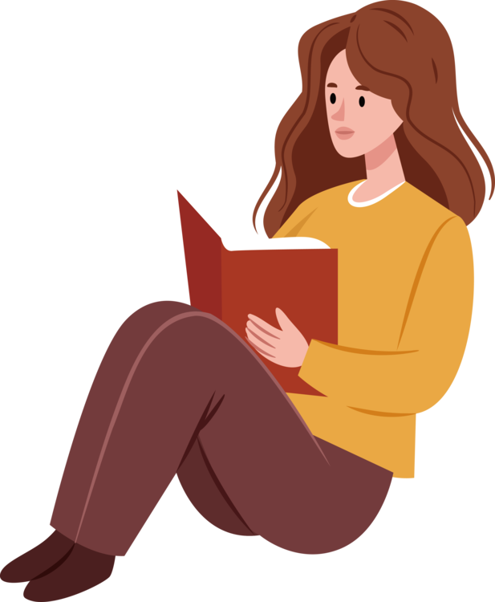
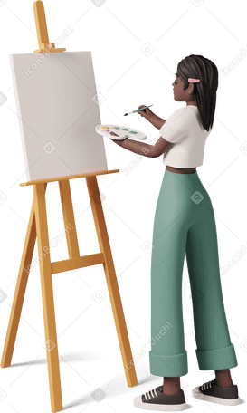
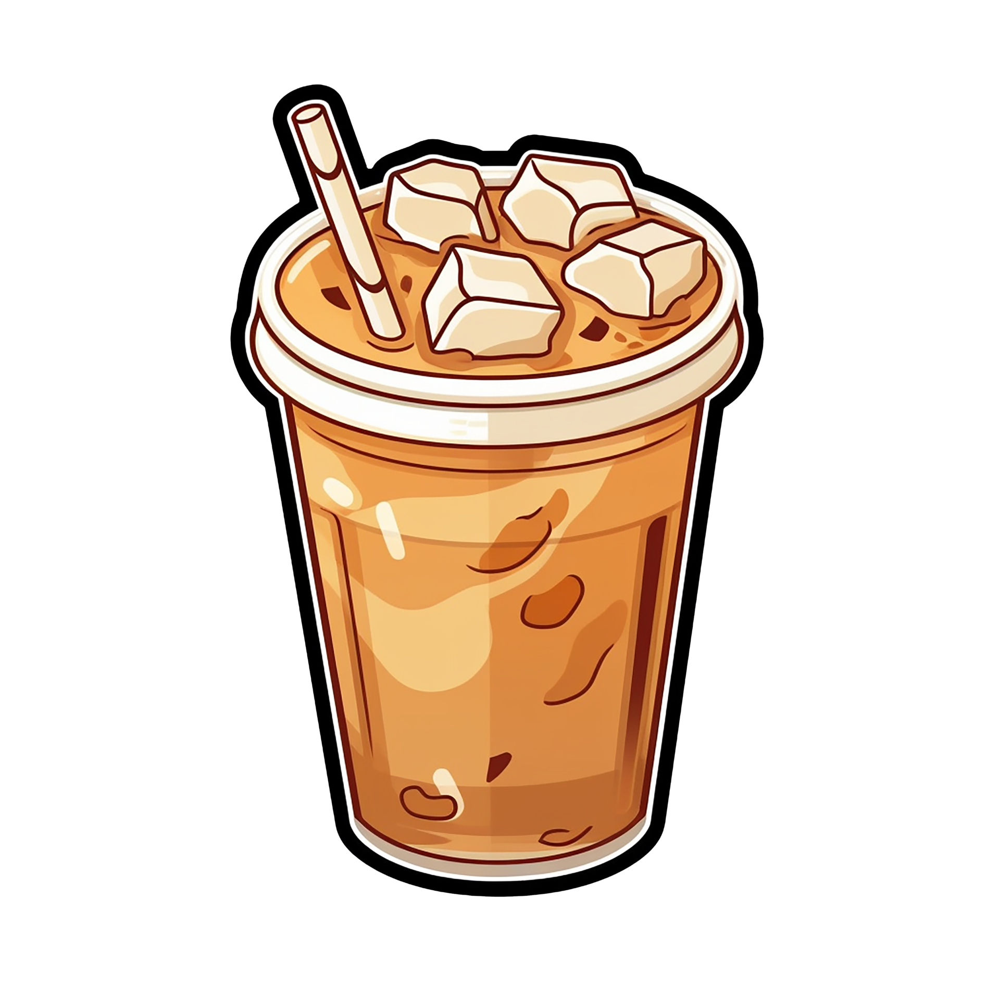

Hobbies
Exploring New Interests
I love exploring new interests and discovering new hobbies and activities that keep life exciting and engaging.

Reading Books
Reading books is one of my favorite pastimes. It allows me to dive into different worlds and expand my knowledge.
Staying Updated on Current Events
I stay updated on current events and new developments, especially in artificial intelligence, which fascinates me greatly.
Painting and Drawing
Painting and drawing are my creative outlets. They allow me to express my thoughts and emotions visually.
Making Projects
I enjoy making projects, whether they are tech-related or involve hands-on crafts. It gives me a sense of accomplishment.

Drinking Coffee
Drinking coffee is a simple pleasure that I enjoy. It helps me relax and focus on my work and studies.
